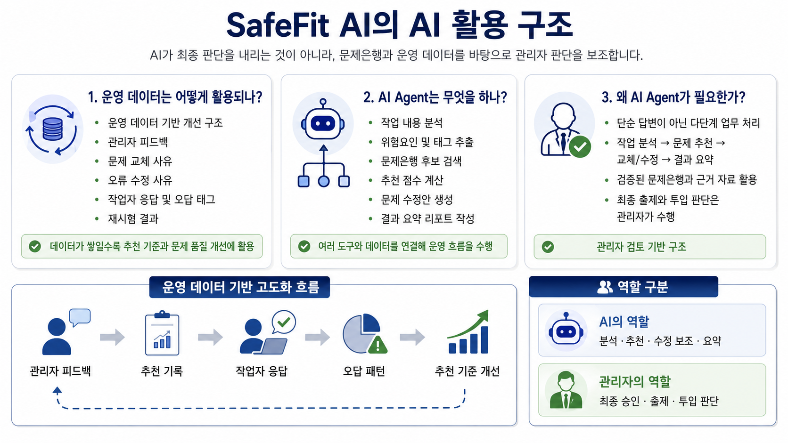
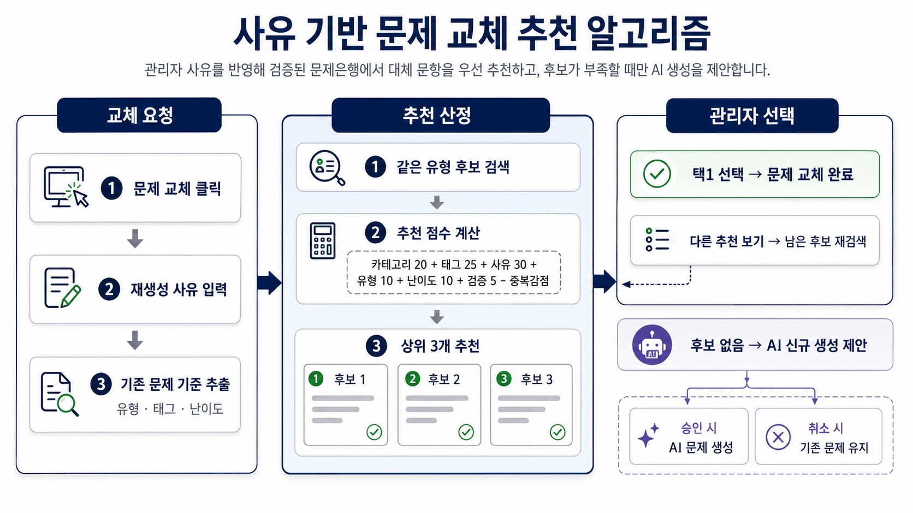
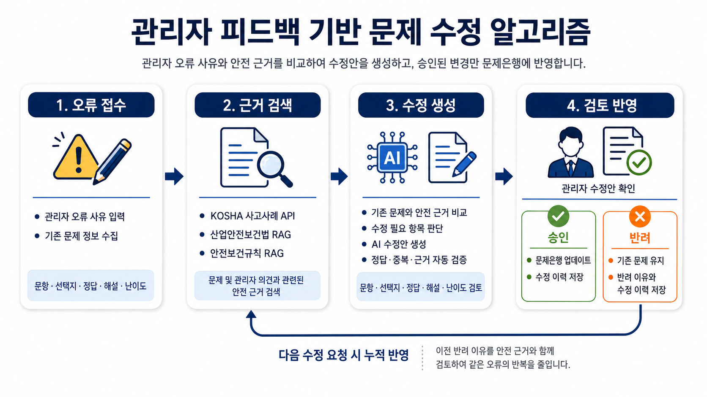
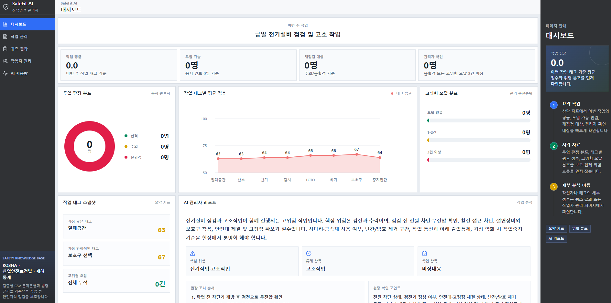

2026 - AI SAFETY SERVICE
SafeFit AI
A human-in-the-loop industrial safety service combining LLM context understanding with deterministic retrieval, validation and scoring.
1Hybrid AI with separated LLM and rule-engine roles
Context analysis pipeline
- Parsed natural-language work descriptions through the OpenAI Responses API using a Strict JSON Schema that accepts only approved task and risk tags.
- Controlled model variability on the server with alias mapping, tag normalization, deduplication and deterministic fallbacks.
- Logged tokens, cost, response time and status for every call, while caching repeated reports to track operational cost.
My design decisions
- Assigned ambiguous language interpretation to the LLM and repeatable search, scoring and decisions to the rule engine.
- Designed a human-in-the-loop flow in which AI supplies evidence and candidates while managers retain final approval.

2Question recommendation with rule ranking and LLM reranking
Initial question-set construction
- Rewarded category priority, tag overlap and review status, while applying quality penalties to generic wording, short answers and duplicates.
- Prevented topic imbalance by selecting a representative item for each task category before filling the remaining slots by score.
- Alternated true/false answer patterns and reduced consecutive items with similar tags to improve set diversity.
Reason-aware replacement ranking
- Combined category, tags, manager reason, item type, difficulty and review status, then penalized duplicate candidates.
- Sent only the top 12 rule-ranked candidates to the LLM for relevance reranking and adjusted future scores with accepted and rejected tag history.

3Evidence-grounded retrieval and automated correction loop
Evidence-grounded RAG
- Built search queries from item tags, manager-reported errors and recent rejection reasons to retrieve KOSHA accident cases and safety regulations.
- Scored query, title and key-phrase matches, and revised an item only when both KOSHA and regulatory evidence were available.
- Passed retrieved evidence into the prompt to reduce revisions that drift from source material.
Validation and approval loop
- Automatically checked option count, answer presence, duplication, explanation length, tag consistency and evidence overlap, then retried up to twice with explicit error feedback.
- Committed only manager-approved revisions to the question bank and stored rejection reasons in SQLite for reuse in later retrieval and recommendations.

4Explainable scoring and full-stack operations
Scoring and weak-area algorithm
- Normalized up to 20 active scoring tags by frequency and priority, then aggregated item scores at tag level.
- Calculated the final result as the arithmetic mean of visible tag scores so workers and managers share the same scoring basis.
- Combined exposure count, incorrect-answer count and ratio, high-risk errors and tag averages to identify the five weakest tags.
Implementation scope
- Built role-based React and TypeScript screens, FastAPI endpoints, SQLite state models and AI usage logging as a solo developer.
- Connected the full workflow from work registration and question review to mobile testing, result analysis and manager decisions.
ReactTypeScriptFastAPISQLiteOpenAI APIKOSHA API
